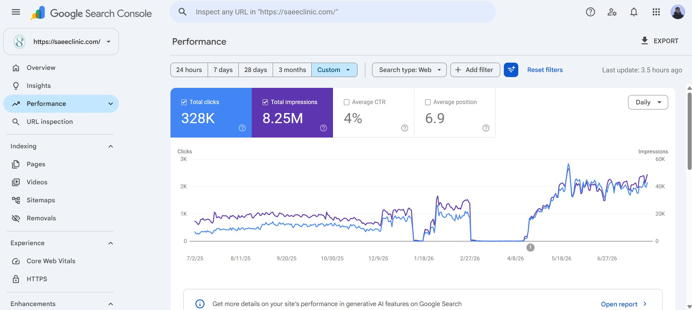
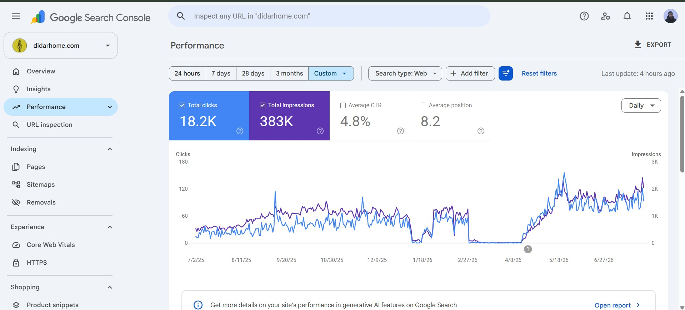

SEO Results
Pooya Hayati · Google Search Console, July 2025 to July 2026 · pouyahayati.com
saeeclinic.com
14K to 60K organic clicks / monthabout 4x

The two stretches in early 2026 where traffic drops to near zero in early 2026 were mainly caused by nationwide internet shutdowns in Iran during the war, not by ranking issues. Traffic recovered and passed its earlier level once access returned.
didarhome.com
700 to 3,500+ organic clicks / monthabout 5x in 12 months

The same internet shutdowns in Iran explain the near-zero stretches in early 2026. Traffic recovered and passed its earlier level afterwards.